background-image: url(../assets/cover.png) --- # Table of Contents **1. Introduction to the course & learning objectives** -- **2. Custom GPT Basics** -- **3. Application of Custom GPTs** -- **4. Introduction to Claude & Artifacts** -- **5. Application of Claude & Artifacts** --- class: center, middle # Introduction & Learning Objectives --- # In this course you will -- - <span style="font-size:1.2em;">🎓</span> Learn the basics of ChatGPT & Custom GPTs -- - <span style="font-size:1.2em;">🛠️</span> Learn how to build useful Custom GPTs for automating tasks and workflows -- - <span style="font-size:1.2em;">✨</span> Learn the basics of Claude & Artifacts -- - <span style="font-size:1.2em;">🚀</span> Learn how to use Claude, Artifacts and MCPs to build useful tools and workflows --- class: center, middle # Custom GPT Basics --- # What & Why Custom GPTs? -- - <span style="font-size:1.2em;">🛠️</span> **Customizable** - Tailor AI to your specific needs -- - <span style="font-size:1.2em;">📦</span> **Specialized & shareable packages** - Create once, share everywhere -- - <span style="font-size:1.2em;">🔗</span> **Connect to services** - Integrate with external tools and APIs -- - <span style="font-size:1.2em;">💡</span> **Diverse use cases** - From research to coding to data analysis --- # Custom GPT Examples <div style="display: grid; grid-template-columns: 1fr 1fr; grid-gap: 40px; align-items: center; justify-items: center; width: 100%; margin-top: 60px;"> <div style="text-align: center;"> 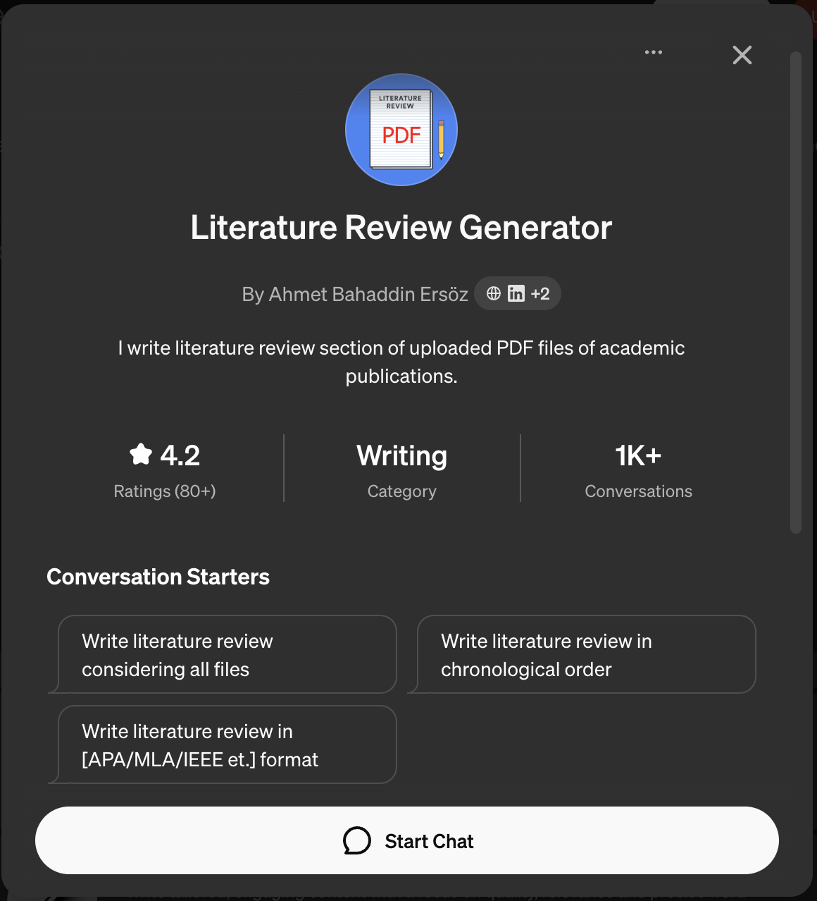 <div style="margin-top: 12px; color: #555; font-size: 0.95em;">Literature Review GPT</div> </div> <div style="text-align: center;"> 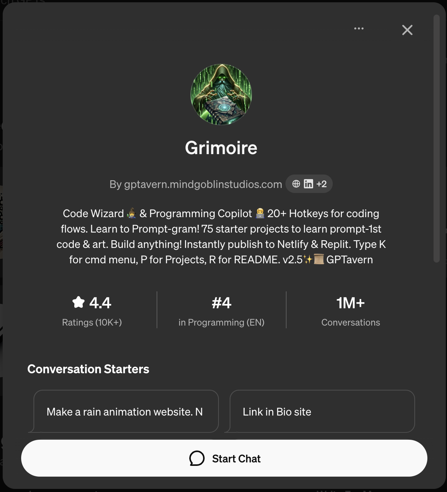 <div style="margin-top: 12px; color: #555; font-size: 0.95em;">Coding Assistant GPT</div> </div> <div style="text-align: center;"> 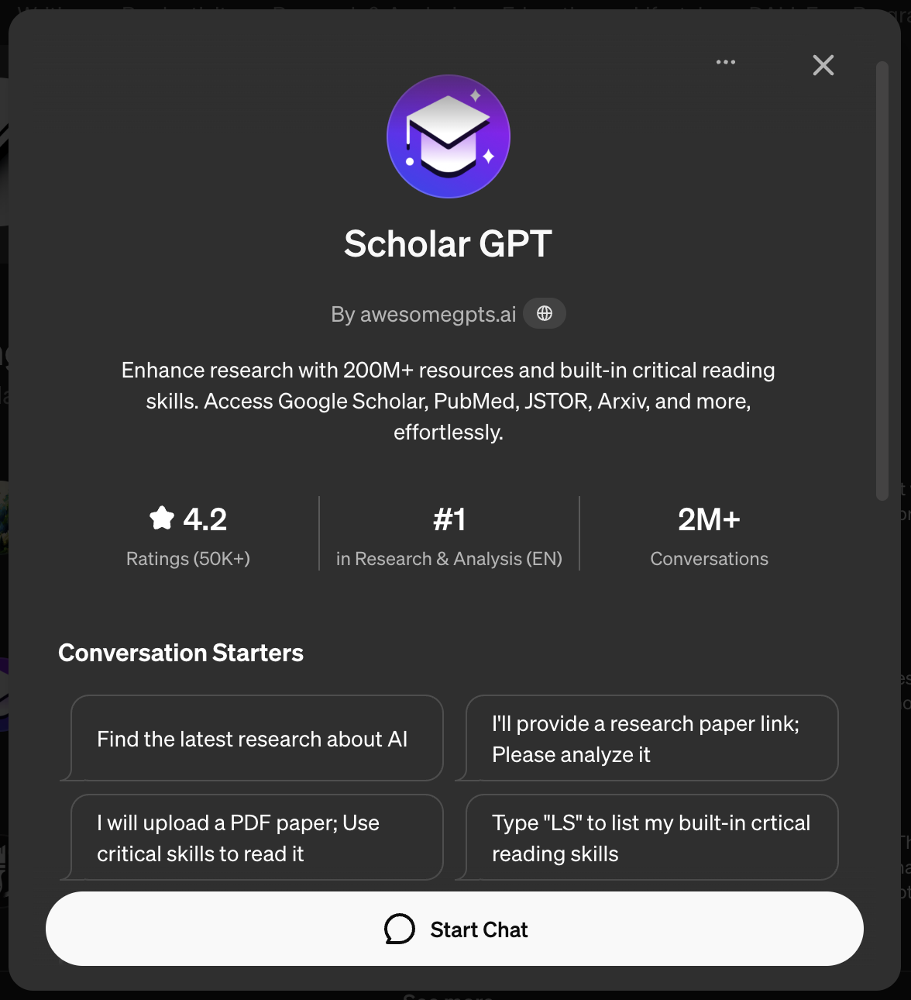 <div style="margin-top: 12px; color: #555; font-size: 0.95em;">Scholar GPT</div> </div> <div style="text-align: center;"> 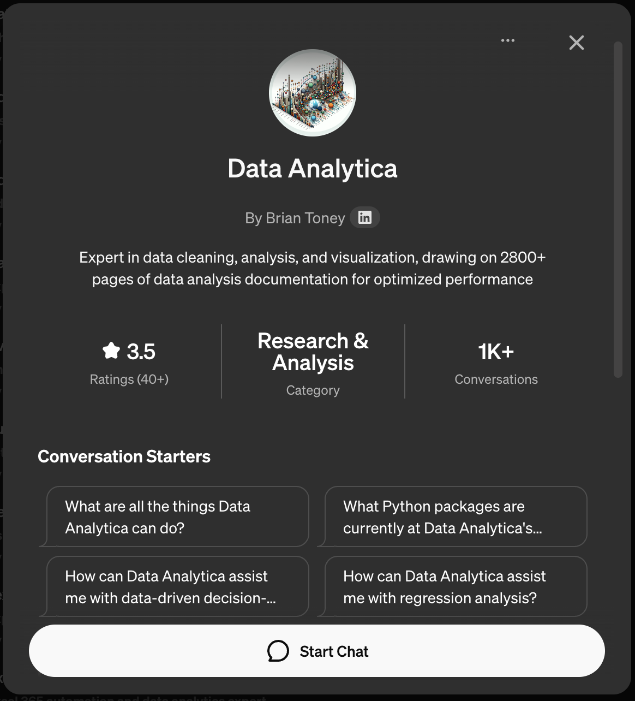 <div style="margin-top: 12px; color: #555; font-size: 0.95em;">Data Analysis GPT</div> </div> </div> --- # Custom GPTs as... <div style="display: grid; grid-template-columns: 1fr 1fr; grid-template-rows: 1fr 1fr; gap: 32px; align-items: center; justify-items: center; width: 100%; min-height: 450px; margin-top: 40px;"> <div style="background: #f6fff6; border: 1.5px solid #2e7d32; border-radius: 18px; box-shadow: 0 2px 12px #0001; padding: 30px 20px; text-align: center; width: 95%; display: flex; flex-direction: column; justify-content: center;"> <div style="font-size: 1.25em; font-weight: 600; margin-bottom: 8px;"> <span style="color: #2e7d32;">Translators of Complexity</span> </div> <p style="font-size: 0.9em; color: #555; margin: 0;">Simplify complex domain knowledge</p> </div> <div style="background: #f6faff; border: 1.5px solid #1565c0; border-radius: 18px; box-shadow: 0 2px 12px #0001; padding: 30px 20px; text-align: center; width: 95%; display: flex; flex-direction: column; justify-content: center;"> 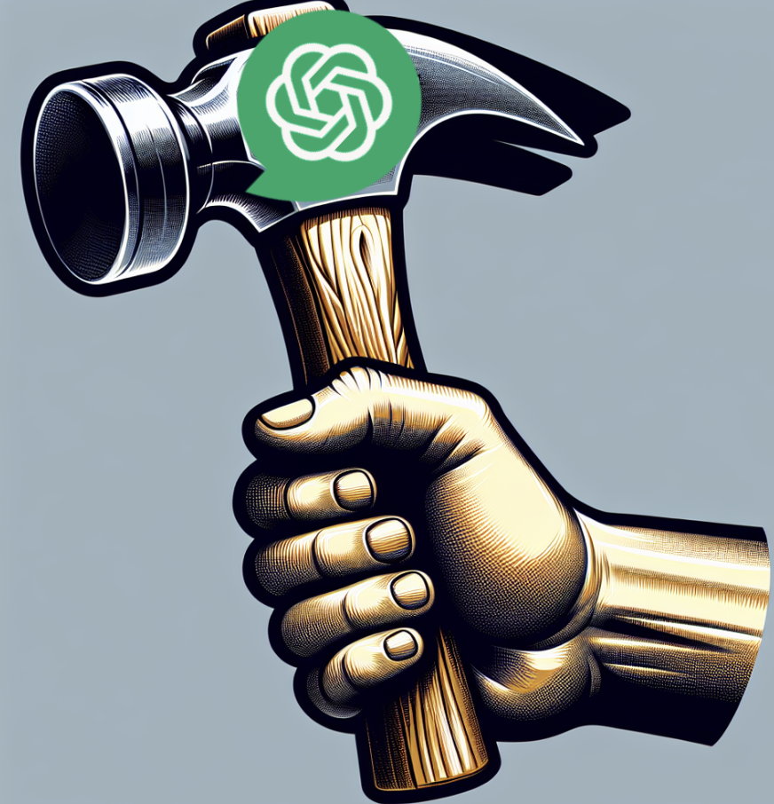 <div style="font-size: 1.25em; font-weight: 600; margin-bottom: 8px;"> <span style="color: #1565c0;">Tools</span> </div> <p style="font-size: 0.9em; color: #555; margin: 0;">Automate repetitive tasks</p> </div> <div style="background: #fff6fa; border: 1.5px solid #ad1457; border-radius: 18px; box-shadow: 0 2px 12px #0001; padding: 30px 20px; text-align: center; width: 95%; display: flex; flex-direction: column; justify-content: center;"> <div style="font-size: 1.25em; font-weight: 600; margin-bottom: 8px;"> <span style="color: #ad1457;">Agents</span> </div> <p style="font-size: 0.9em; color: #555; margin: 0;">Act autonomously on your behalf</p> </div> <div style="background: #f9f6ff; border: 1.5px solid #6a1b9a; border-radius: 18px; box-shadow: 0 2px 12px #0001; padding: 30px 20px; text-align: center; width: 95%; display: flex; flex-direction: column; justify-content: center;"> <div style="font-size: 1.25em; font-weight: 600; margin-bottom: 8px;"> <span style="color: #6a1b9a;">Collaborators</span> </div> <p style="font-size: 0.9em; color: #555; margin: 0;">Work alongside you as partners</p> </div> </div> --- # When Should You Use Custom GPTs? -- <div style="background: #f0f8ff; border-radius: 12px; padding: 25px 28px; margin: 20px 0;"> <h3 style="margin-top: 0; color: #1565c0;">✓ Use Custom GPTs when:</h3> <ul style="margin-bottom: 0;"> <li>You're writing too many edits to a system message for the general model</li> <li>A complex task involves multiple specialized prompts within the same topic</li> <li>You need consistent behavior across multiple sessions</li> </ul> </div> -- <div style="background: #fff8e1; border-radius: 12px; padding: 25px 28px; margin: 20px 0;"> <h3 style="margin-top: 0; color: #f57c00;">⚡ Building vs. Using Existing GPTs:</h3> <ul style="margin-bottom: 0;"> <li>Start with concrete requirements to avoid wasting time</li> <li>Search existing GPT store for similar solutions first</li> <li>Build custom when you need specific domain knowledge or workflows</li> </ul> </div> --- class: center, middle <h1> <span style="background-color: lightgreen"> Building our First Custom GPT </span> </h1> --- class: center, middle # Custom GPT Interface Walkthrough --- background-image: url(../assets/custom-gpt-interface/custom-gpt-interface.002.jpeg) --- background-image: url(../assets/custom-gpt-interface/custom-gpt-interface.003.jpeg) --- background-image: url(../assets/custom-gpt-interface/custom-gpt-interface.004.jpeg) --- background-image: url(../assets/custom-gpt-interface/custom-gpt-interface.005.jpeg) --- background-image: url(../assets/custom-gpt-interface/custom-gpt-interface.006.jpeg) --- background-image: url(../assets/custom-gpt-interface/custom-gpt-interface.007.jpeg) --- background-image: url(../assets/custom-gpt-interface/custom-gpt-interface.008.jpeg) --- background-image: url(../assets/custom-gpt-interface/custom-gpt-interface.009.jpeg) --- background-image: url(../assets/custom-gpt-interface/custom-gpt-interface.010.jpeg) --- background-image: url(../assets/custom-gpt-interface/custom-gpt-interface.011.jpeg) --- background-image: url(../assets/custom-gpt-interface/custom-gpt-interface.012.jpeg) --- background-image: url(../assets/custom-gpt-interface/custom-gpt-interface.013.jpeg) --- background-image: url(../assets/custom-gpt-interface/custom-gpt-interface.014.jpeg) --- background-image: url(../assets/custom-gpt-interface/custom-gpt-interface.015.jpeg) --- background-image: url(../assets/custom-gpt-interface/custom-gpt-interface.016.jpeg) --- background-image: url(../assets/custom-gpt-interface/custom-gpt-interface.017.jpeg) --- background-image: url(../assets/custom-gpt-interface/custom-gpt-interface.018.jpeg) --- background-image: url(../assets/custom-gpt-interface/custom-gpt-interface.019.jpeg) --- background-image: url(../assets/custom-gpt-interface/custom-gpt-interface.020.jpeg) --- background-image: url(../assets/custom-gpt-interface/custom-gpt-interface.021.jpeg) --- background-image: url(../assets/custom-gpt-interface/custom-gpt-interface.022.jpeg) --- background-image: url(../assets/custom-gpt-interface/custom-gpt-interface.023.jpeg) --- background-image: url(../assets/custom-gpt-interface/custom-gpt-interface.024.jpeg) --- background-image: url(../assets/custom-gpt-interface/custom-gpt-interface.025.jpeg) --- background-image: url(../assets/custom-gpt-interface/custom-gpt-interface.026.jpeg) --- background-image: url(../assets/custom-gpt-interface/custom-gpt-interface.027.jpeg) --- background-image: url(../assets/custom-gpt-interface/custom-gpt-interface.028.jpeg) --- background-image: url(../assets/custom-gpt-interface/custom-gpt-interface.029.jpeg) --- background-image: url(../assets/custom-gpt-interface/custom-gpt-interface.030.jpeg) --- background-image: url(../assets/custom-gpt-interface/custom-gpt-interface.031.jpeg) --- background-image: url(../assets/custom-gpt-interface/custom-gpt-interface.032.jpeg) --- background-image: url(../assets/custom-gpt-interface/custom-gpt-interface.033.jpeg) --- background-image: url(../assets/custom-gpt-interface/custom-gpt-interface.034.jpeg) --- background-image: url(../assets/custom-gpt-interface/custom-gpt-interface.035.jpeg) --- background-image: url(../assets/custom-gpt-interface/custom-gpt-interface.036.jpeg) --- background-image: url(../assets/custom-gpt-interface/custom-gpt-interface.037.jpeg) --- background-image: url(../assets/custom-gpt-interface/custom-gpt-interface.038.jpeg) --- background-image: url(../assets/custom-gpt-interface/custom-gpt-interface.039.jpeg) --- background-image: url(../assets/custom-gpt-interface/custom-gpt-interface.040.jpeg) --- background-image: url(../assets/custom-gpt-interface/custom-gpt-interface.041.jpeg) --- background-image: url(../assets/custom-gpt-interface/custom-gpt-interface.042.jpeg) --- background-image: url(../assets/custom-gpt-interface/custom-gpt-interface.043.jpeg) --- background-image: url(../assets/custom-gpt-interface/custom-gpt-interface.044.jpeg) --- background-image: url(../assets/custom-gpt-interface/custom-gpt-interface.045.jpeg) --- background-image: url(../assets/custom-gpt-interface/custom-gpt-interface.046.jpeg) --- background-image: url(../assets/custom-gpt-interface/custom-gpt-interface.047.jpeg) --- background-image: url(../assets/custom-gpt-interface/custom-gpt-interface.048.jpeg) --- background-image: url(../assets/custom-gpt-interface/custom-gpt-interface.049.jpeg) --- background-image: url(../assets/custom-gpt-interface/custom-gpt-interface.050.jpeg) --- background-image: url(../assets/custom-gpt-interface/custom-gpt-interface.051.jpeg) --- class: center, middle <h1> <span style="background-color: lightgreen"> Demo: Building specialized GPT tutors </span> </h1> --- class: center, middle <h1> <span style="background-color: lightgreen"> Demo: Building a Custom GPT to Extract Data from PDFs </span> </h1> --- class: center, middle # Break --- class: center, middle # Introduction to Claude & Artifacts --- # Agenda -- - <span style="font-size:1.2em;">🤖</span> **What is Claude?** -- - <span style="font-size:1.2em;">⚡</span> **Capabilities** -- - <span style="font-size:1.2em;">🎨</span> **What is Artifacts?** -- - <span style="font-size:1.2em;">💡</span> **Use Cases & Demos** --- # What is Claude? <div style="text-align: center; margin-top: 80px;"> 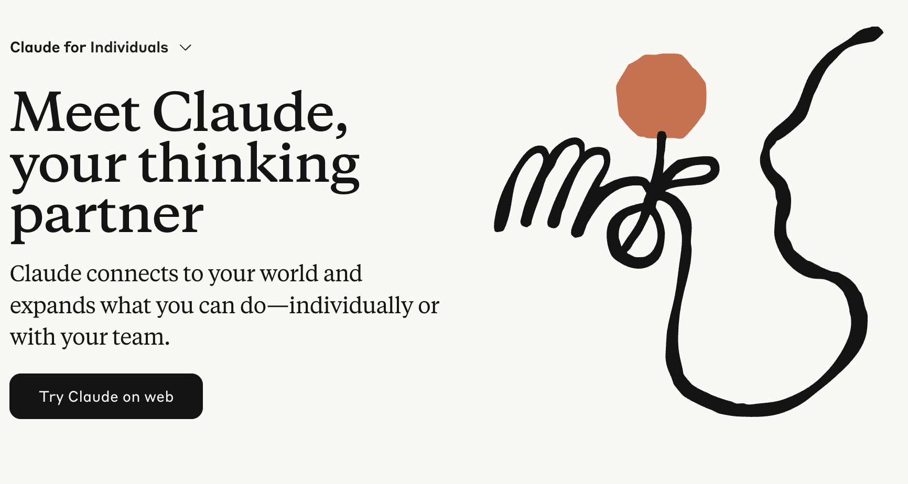 </div> --- # Capabilities Claude with the chat interface can help with: -- - <span style="font-size:1.2em;">✍️</span> **Text and code generation** - Write content, debug code, explain concepts -- <div style="text-align: center; margin-top: 40px;"> 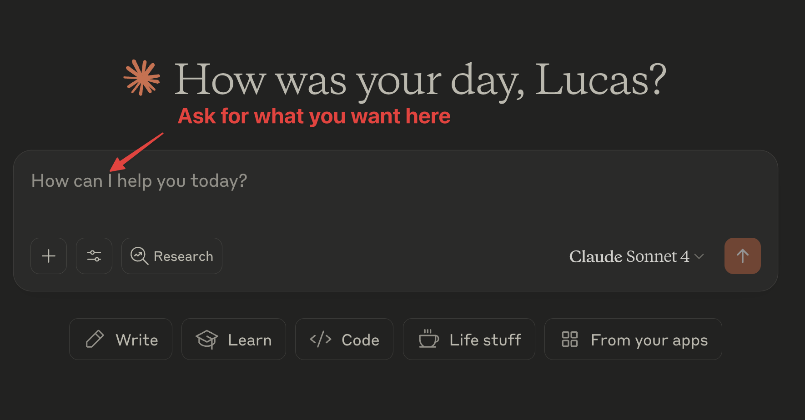 </div> --- # Capabilities Claude with the chat interface can help with: -- - <span style="font-size:1.2em;">📄</span> **Interacting with documents** - Analyze PDFs, extract insights, summarize content -- <div style="text-align: center; margin-top: 40px;"> 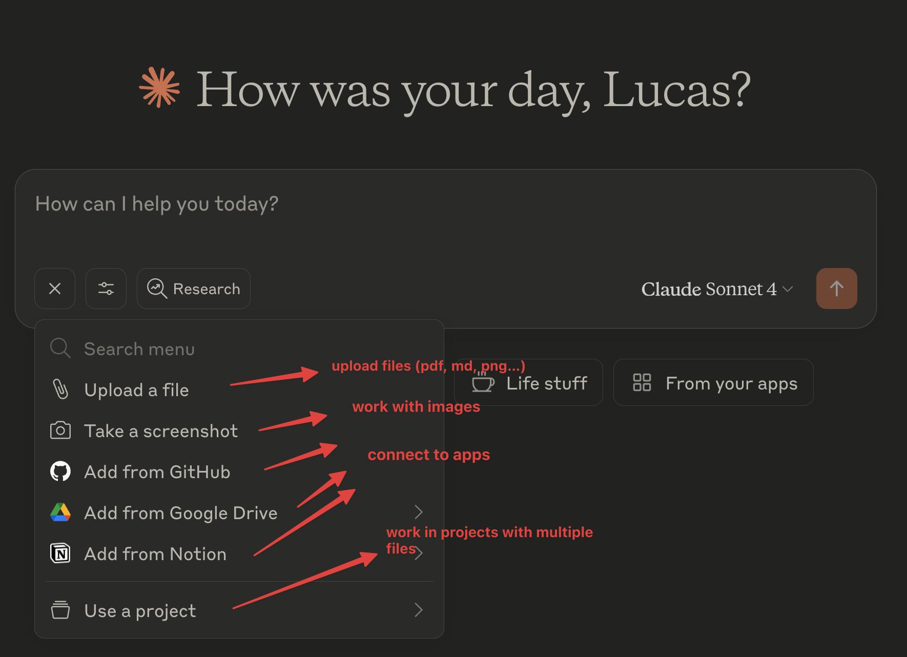 </div> -- <div style="margin-top: 40px; padding: 15px; background: #f5f5f5; border-radius: 8px; text-align: center;"> <span style="color: #666; font-style: italic;">Note: No image generation on the standard interface</span> </div> --- class: center, middle # Ok, cool...but most of these things you get with ChatGPT... ## so what's special about Claude? --- class: center, middle # Claude Desktop + MCPs ### (Model Context Protocol connectors) --- <div style="text-align: center; margin-top: 100px;"> 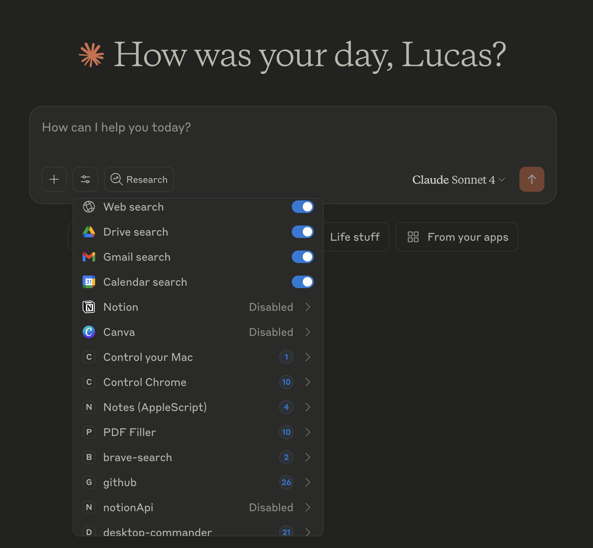 </div> --- class: center, middle # Artifacts --- <div style="text-align: center; margin-top: 120px;"> 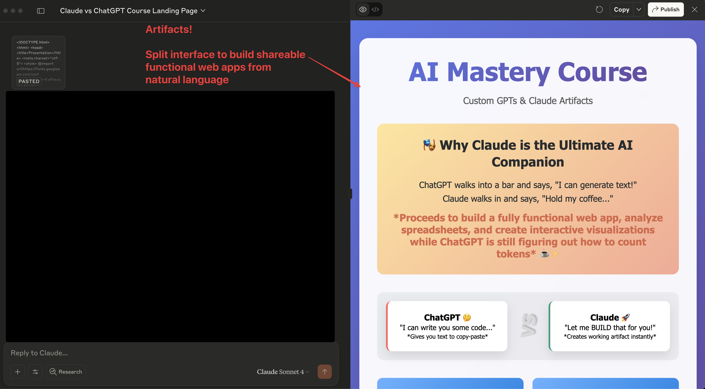 </div> --- # What is Artifacts? <div style="text-align: center; margin-top: 80px;"> 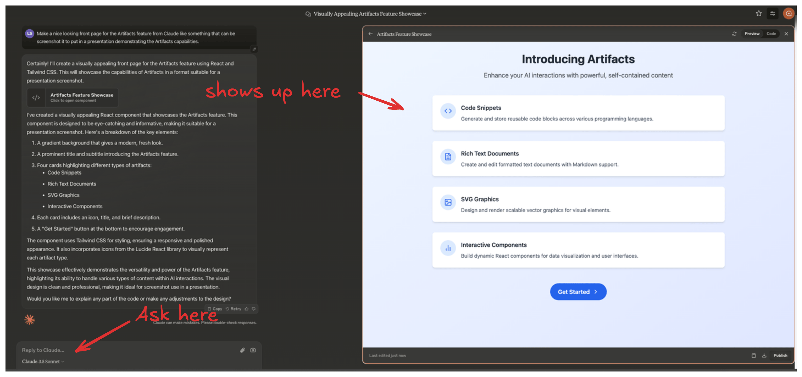 </div> --- # What is Artifacts? -- - <span style="font-size:1.2em;">🪟</span> **Dedicated windows** displaying substantial, standalone content -- - <span style="font-size:1.2em;">✏️</span> **Interactive, editable outputs** separate from the main conversation -- - <span style="font-size:1.2em;">🤝</span> **Collaborative work environment** - Claude's evolution into a true partner --- # Characteristics of Artifacts -- - <span style="font-size:1.2em;">📏</span> **Significant and self-contained** (typically over 15 lines) -- - <span style="font-size:1.2em;">🔄</span> **Editable and reusable** - Content likely to be iterated on -- - <span style="font-size:1.2em;">🎯</span> **Complex pieces** that stand on their own -- - <span style="font-size:1.2em;">💾</span> **Reference material** - Intended for future use -- - <span style="font-size:1.2em;">🚀</span> **AI-powered shareable apps** - Build and share interactive applications easily! --- # Types of Artifact Content <div style="text-align: center; margin-top: 60px;"> 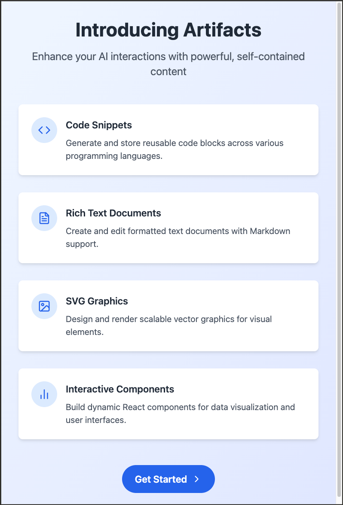 </div> <div style="text-align: center; margin-top: 20px;"> <span style="color: gray; font-size: 0.9em; font-style: italic;">Generated with Artifacts</span> </div> --- # Types of Artifact Content -- - <span style="font-size:1.2em;">📝</span> **Documents** - Markdown or Plain Text -- - <span style="font-size:1.2em;">💻</span> **Code snippets** - Multiple languages supported -- - <span style="font-size:1.2em;">🌐</span> **Websites** - Single page HTML applications -- - <span style="font-size:1.2em;">🎨</span> **SVG images** - Scalable Vector Graphics -- - <span style="font-size:1.2em;">📊</span> **Diagrams and flowcharts** - Visual representations -- - <span style="font-size:1.2em;">⚛️</span> **Interactive React components** - Prototype real applications! --- class: center, middle <h1> <span style="background-color: lightgreen"> Claude Demo </span> </h1> --- # Artifacts Recap ## How to Use Artifacts -- 1. Start or continue a conversation with Claude -- 2. Request content that typically results in an Artifact -- 3. Artifact window appears on the right side of the chat interface -- 4. Two tabs: **"Code"** and **"Preview"** -- 5. Edit code, view preview, or ask Claude for changes -- 6. Switch between Artifacts using chat controls --- # Artifacts Recap ## Editing Artifacts -- - <span style="font-size:1.2em;">⚡</span> **Real-time modifications** - Modify content instantly -- - <span style="font-size:1.2em;">💬</span> **Chat-based edits** - Ask Claude to make changes via conversation -- - <span style="font-size:1.2em;">🔄</span> **Version history** - Non-destructive edits with full history -- - <span style="font-size:1.2em;">⏮️</span> **Time travel** - Access previous versions using the version selector --- # Artifacts Recap ## Saving and Exporting Artifacts -- - <span style="font-size:1.2em;">📋</span> **Copy to clipboard** - Quick copying of content -- - <span style="font-size:1.2em;">💾</span> **Download as file** - Export for local use -- - <span style="font-size:1.2em;">🕐</span> **Access version history** - Review all iterations -- - <span style="font-size:1.2em;">📁</span> **Save to projects** - Better organization and management -- - <span style="font-size:1.2em;">👥</span> **Team sharing** - Collaborate with Claude Team users --- # Artifacts Recap ## Artifacts vs. Regular Chat Responses <div style="display: flex; gap: 40px; margin: 60px 40px; justify-content: center;"> <div style="flex: 1; background: #f5f5f5; border: 1.5px solid #111; border-radius: 18px; padding: 30px 25px;"> <h3 style="text-align: center; color: #111; margin-top: 0;">Regular Responses</h3> <ul style="list-style: none; padding: 0;"> <li style="margin: 12px 0;">• Inline text</li> <li style="margin: 12px 0;">• Primarily text</li> <li style="margin: 12px 0;">• Static</li> <li style="margin: 12px 0;">• Typically shorter</li> <li style="margin: 12px 0;">• Limited visualization</li> </ul> </div> <div style="flex: 1; background: #e8f5e8; border: 1.5px solid #2e7d32; border-radius: 18px; padding: 30px 25px;"> <h3 style="text-align: center; color: #2e7d32; margin-top: 0;">Artifacts ✨</h3> <ul style="list-style: none; padding: 0;"> <li style="margin: 12px 0;">• Dedicated window</li> <li style="margin: 12px 0;">• Multiple formats</li> <li style="margin: 12px 0;">• Fully editable</li> <li style="margin: 12px 0;">• Larger, complex content</li> <li style="margin: 12px 0;">• Rich visualization options</li> </ul> </div> </div> --- # Artifacts Recap ## Integration with Projects -- - <span style="font-size:1.2em;">🔗</span> **Associate with chats** - Link Artifacts to specific conversations -- - <span style="font-size:1.2em;">👥</span> **Team collaboration** - Grant team member access for collaboration -- - <span style="font-size:1.2em;">📢</span> **Activity feed** - Share in Project's activity feed -- - <span style="font-size:1.2em;">🎯</span> **Efficient project management** - Manage complex, long-term projects efficiently --- class: center, middle # Q&A --- class: center, middle <h1> <span style="background-color: lightgreen"> Demo: Claude Desktop with MCPs Deep Dive </span> </h1> --- class: center, middle <h1> <span style="background-color: lightgreen"> Demo: Building a Personal Assistant with Claude Desktop + MCPs </span> </h1> --- class: center, middle <h1> <span style="background-color: lightgreen"> Demo: Comparing ChatGPT/Custom GPTs vs Claude/Artifacts </span> </h1> --- class: center, middle # Thank You! ## Questions & Further Discussion <div style="margin-top: 60px;"> <p style="font-size: 18px; color: #555;"> Keep exploring and building with AI tools! </p> </div>